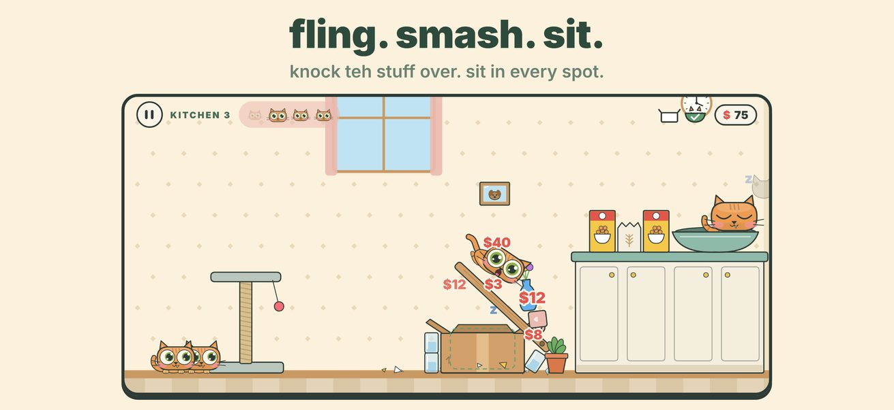
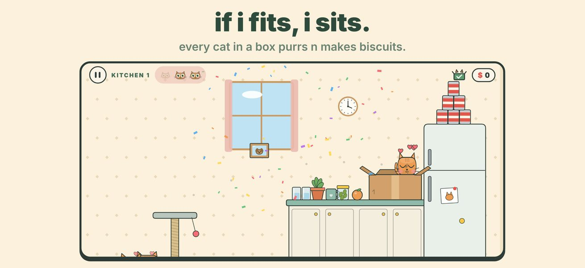
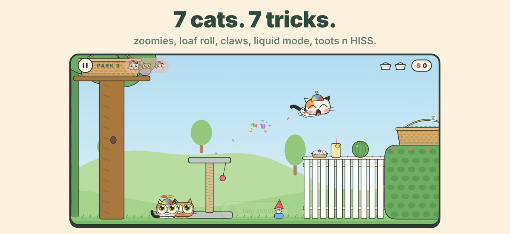
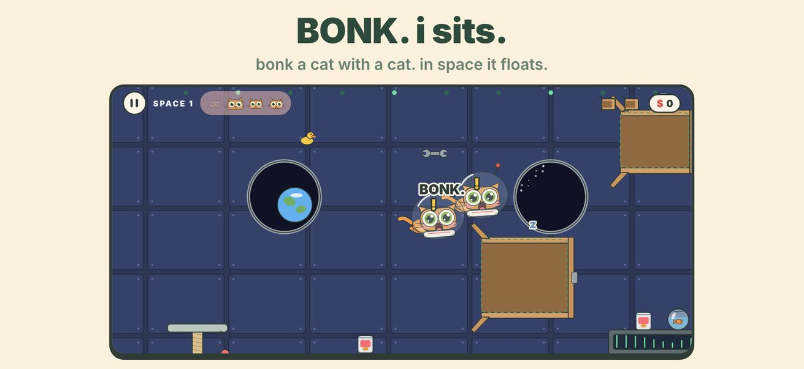
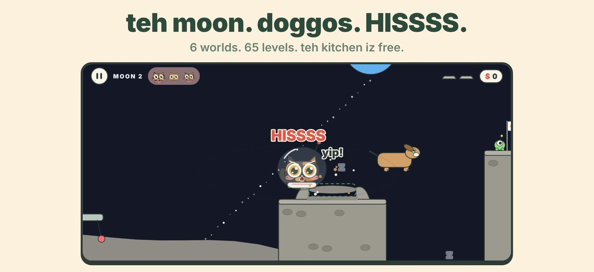

se eu caibo, eu sento.
Puxe para trás. Solte. Lance o gato em um cômodo cheio de pratos, vasos, caixas e cachorros. Derrube tudo e pouse em cada caixa. Cada gato tem um truque: rolar como pãozinho, escalar com as garras, disparar, se espremer na menor caixa, soltar pum ou chiar. E ainda tem megachonk.
Em breve no iPhone e iPad




Lance. Quebre. Sente.
Física de verdade: tudo cai, quica e quebra. Cada lugar precisa de um gato.
65 fases, 6 mundos
A cozinha, a janela, o parque, o depósito de caixas, o espaço e a lua.
Sete gatos, sete truques
Toque durante o voo para rolar, escalar, disparar, espremer, soltar pum ou chiar. E megachonk sai voando da própria cat-a-pult.
A conta do humano
Tudo que você quebra entra na conta. Gaste no guarda-roupa com chapéus, coleiras e roupas para cada gato.
Quebra tudo
Cada mundo termina com uma sala bônus para fazer a maior conta e um modo soneca para quebrar coisas e relaxar.
Uma compra. Sem anúncios.
A cozinha é grátis. Uma compra abre todos os mundos. Sem anúncios nem rastreamento. Jogue offline.